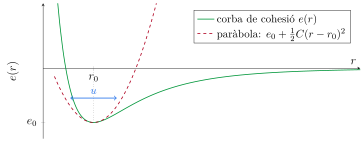
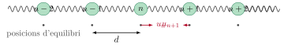
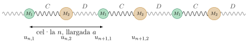

Al Tema 3 hem trobat on són els àtoms d'un cristall: al mínim de la corba de cohesió, a la distància \(r_0\) dels seus veïns, i hem vist que la corbatura d'aquest mínim és la rigidesa del sòlid. Però cap àtom està mai quiet al mínim. A qualsevol temperatura, i fins i tot a \(T=0\) per raons quàntiques, els àtoms oscil·len al voltant de la seva posició d'equilibri. Aquestes oscil·lacions no són independents: cada àtom està lligat als seus veïns, i quan un es mou, estira o comprimeix els enllaços amb els altres i els arrossega. El resultat és que les vibracions es propaguen pel cristall en forma d'ona. L'objectiu d'aquest tema és descriure aquestes ones: quines freqüències tenen, com es mouen els àtoms en cadascuna, i com es relacionen amb les magnituds que ja sabem mesurar, com la velocitat del so.
Sense vibracions no s'entén gairebé cap propietat tèrmica d'un sòlid: ni la calor específica, ni la dilatació, ni la conductivitat tèrmica d'un aïllant, ni la fusió. Tampoc s'entén per què un cristall iònic absorbeix la llum infraroja, ni per què la resistència d'un metall creix amb la temperatura. Tot això arrencarà de la relació entre freqüència i longitud d'ona de les vibracions, la relació de dispersió, que és el que calcularem aquí per a models cada cop més realistes: una cadena d'àtoms iguals, una cadena de dos àtoms per cel·la, i finalment un cristall tridimensional.
1.1 L'aproximació harmònica
Partim de la corba de cohesió del Tema 3, l'energia d'un enllaç entre dos àtoms en funció de la seva distància. Prop del mínim, qualsevol funció suau es pot aproximar per una paràbola. Desenvolupant en sèrie de Taylor al voltant de \(r_0\), i tenint en compte que el terme lineal s'anul·la perquè \(r_0\) és un mínim,
\[e(r)\simeq e(r_0)+\frac12\,e''(r_0)\,(r-r_0)^2 . \tag{1}\]

Això vol dir que, prop de l'equilibri, un cristall és un conjunt de masses unides per molles, i tot el que farem en aquest tema és resoldre la mecànica d'aquest sistema. No cal saber d'on surt la corba de cohesió: tant si l'enllaç és de van der Waals, iònic o covalent, prop del mínim és una paràbola, i l'única cosa que canvia d'un material a un altre són els valors de \(C\) i de les masses.
2 La cadena monoatòmica
El model més senzill amb tota la física essencial és una cadena d'àtoms idèntics, de massa \(M\), separats a l'equilibri una distància \(d\), cadascun unit als seus dos veïns per una molla de constant \(C\). Sigui \(u_n\) el desplaçament de l'àtom \(n\) respecte de la seva posició d'equilibri \(nd\).

2.1 Equacions de moviment
L'energia potencial és la suma de l'energia de totes les molles. La molla entre els àtoms \(n\) i \(n+1\) s'ha allargat \(u_{n+1}-u_n\), de manera que
\[V=\frac12C\sum_n(u_{n+1}-u_n)^2 .\]
La força sobre l'àtom \(n\) és \(-\partial V/\partial u_n\), i \(u_n\) només apareix en dos termes de la suma, el de la molla de la dreta, \((u_{n+1}-u_n)^2\), i el de l'esquerra, \((u_n-u_{n-1})^2\). Derivant,
\[F_n=-\frac{\partial V}{\partial u_n}=C(u_{n+1}-u_n)-C(u_n-u_{n-1})=C\,(u_{n+1}+u_{n-1}-2u_n),\]
i la segona llei de Newton dona
\[M\ddot u_n=C\,(u_{n+1}+u_{n-1}-2u_n). \tag{2}\]
Té una lectura senzilla: la força sobre un àtom és proporcional a la diferència entre la posició mitjana dels seus dos veïns, \(\frac12(u_{n+1}+u_{n-1})\), i la seva. Si l'àtom és exactament al mig dels dos veïns no rep cap força, per molt desplaçats que estiguin tots tres. És un sistema de \(N\) equacions acoblades, una per àtom.
2.2 Ones planes i relació de dispersió
Per desacoblar les equacions fem servir la simetria de translació de la cadena, igual que farem servir la del cristall al Tema 7 per als electrons: si tots els àtoms són equivalents, les solucions han de ser ones en què cada àtom fa el mateix que el seu veí amb un retard de fase fix. Provem una ona plana,
\[u_n(t)=A\,e^{i(qnd-\omega t)}, \tag{3}\]
on \(q\) és el vector d'ona (\(2\pi\) dividit per la longitud d'ona) i \(\omega\) la freqüència angular. La posició \(x=nd\) de l'àtom hi entra només a través de \(qnd\), i la solució física és la part real. L'avantatge d'aquesta forma és que els desplaçaments dels veïns es relacionen amb el de l'àtom \(n\) per un simple factor de fase,
\[u_{n\pm1}=A\,e^{i(q(n\pm1)d-\omega t)}=u_n\,e^{\pm iqd},
\qquad
\ddot u_n=-\omega^2u_n .\]
En el llenguatge que farem servir en tres dimensions, hem escrit l'equació de moviment com \(\omega^2u=D(q)\,u\), amb \(D(q)=(2C/M)(1-\cos qd)\). Aquest número és la matriu dinàmica de la cadena: una matriu \(1\times1\) perquè hi ha un sol àtom per cel·la i una sola direcció de moviment. Quan hi hagi més àtoms o més dimensions serà una matriu de debò, i les freqüències en seran els valors propis.
Carregant la simulació…
Relació de dispersió dels plans (100) del coure (\(d=1.81\) Å), dibuixada més enllà de la primera zona de Brillouin (franja verda). La recta discontínua és el so, \(\omega=v_s|q|\). Mou el vector d'ona: el punt ple i el buit difereixen en \(2\pi/d\) i descriuen exactament el mateix moviment dels àtoms.
2.3 Què vol dir la relació de dispersió
La corba té tres propietats que val la pena mirar una a una, perquè cadascuna és un fet físic general dels cristalls i no una particularitat del model.
Periodicitat: la zona de Brillouin. La funció \(\omega(q)\) és periòdica, amb període \(2\pi/d\). La raó és que l'ona plana (3) només es mira als punts \(x=nd\) on hi ha àtoms, i si substituïm \(q\) per \(q+2\pi/d\),
\[e^{i(q+2\pi/d)nd}=e^{iqnd}\,e^{2\pi in}=e^{iqnd},\]
perquè \(n\) és un enter. Els desplaçaments de tots els àtoms són idèntics: no és que les dues ones donin la mateixa freqüència, és que són la mateixa ona. La figura següent ho mostra: una ona de longitud d'ona curta i una de llarga passen exactament pels mateixos àtoms, i els àtoms no poden distingir-les.
Carregant la simulació…
Una ona transversal amb \(q=2.3\pi/d\) (verd) i una amb \(q=0.3\pi/d\) (vermell discontinu) desplacen cada àtom exactament igual. Mou \(q\) fora de la primera zona i mira com els àtoms sempre segueixen també una ona més llarga.
Quants modes hi ha: les condicions de contorn. Un cristall real té un nombre finit d'àtoms, i en una cadena de \(N\) àtoms només alguns valors de \(q\) són possibles. La manera més còmoda d'imposar-ho és tancar la cadena en un anell, de manera que l'àtom \(N\) sigui veí de l'àtom \(0\): són les condicions de contorn periòdiques o de Born–von Kármán, \(u_{n+N}=u_n\). Amb l'ona plana això exigeix \(e^{iqNd}=1\), és a dir
\[q_m=\frac{2\pi}{Nd}\,m,\qquad m=-\frac N2+1,\dots,0,\dots,\frac N2 . \tag{4}\]
Dins de la primera zona hi caben exactament \(N\) valors, separats \(2\pi/Nd\): tants modes com àtoms, que és el nombre de graus de llibertat de la cadena. En una cadena d'un mil·límetre amb \(d=2\) Å, \(N=5\times10^6\) i els punts són tan densos que la corba es pot tractar com a contínua.
Carregant la simulació…
Els \(N\) vectors d'ona permesos en una cadena de \(N\) àtoms amb condicions periòdiques, separats \(2\pi/Nd\): un per cel·la. Canvia \(N\).
La freqüència màxima: la vora de zona. A \(q=\pi/d\) la freqüència és màxima, \(\omega_{\max}=2\sqrt{C/M}\), i l'ona té longitud d'ona \(2d\): cada àtom es mou exactament en sentit contrari al seu veí, \(u_{n+1}=u_ne^{i\pi}=-u_n\). Totes les molles treballen al màxim, i per això és la freqüència més alta que la cadena pot vibrar. És una ona estacionària: els àtoms oscil·len tots amb la mateixa fase (o la contrària), i el patró no es desplaça.
Carregant la simulació…
La cadena a la vora de zona, \(q=\pi/d\): els veïns es mouen en oposició de fase i la longitud d'ona és \(2d\). Les molles blaves estan comprimides i les vermelles, estirades.
2.4 El límit de longitud d'ona llarga: el so
Quan la longitud d'ona és molt més gran que la distància entre àtoms, \(qd\ll1\), el sinus es pot substituir pel seu argument,
\[\omega\simeq2\sqrt{\frac CM}\,\frac{qd}{2}=v_s\,|q|,\qquad v_s=d\sqrt{\frac CM}. \tag{5}\]
La relació de dispersió és lineal, com en un medi continu, i \(v_s\) és la velocitat del so. Es pot veure directament sobre l'equació de moviment: si \(u\) varia poc d'un àtom al següent, \(u_{n\pm1}\simeq u\pm d\,\partial u/\partial x+\frac12d^2\,\partial^2u/\partial x^2\), i l'equació (2) es converteix en
\[M\,\frac{\partial^2u}{\partial t^2}=Cd^2\,\frac{\partial^2u}{\partial x^2},\]
l'equació d'ones del Tema 3, amb \(v_s^2=Cd^2/M\). La teoria de l'elasticitat és el límit de longitud d'ona llarga de la dinàmica de xarxa, i la constant elàstica macroscòpica no és res més que la molla microscòpica: en una cadena, \(Cd^2/M\) fa el paper de \(C_{11}/\rho\).
2.5 Velocitat de fase i velocitat de grup
Per a una ona plana, els punts de fase constant, \(qx-\omega t=\text{const}\), es mouen a la velocitat de fase\(v_\varphi=\omega/q\). Però una ona plana infinita no transporta cap informació ni cap energia localitzada. Un senyal (un pols de so, un paquet d'ones) és una superposició d'ones de vectors d'ona propers, i el que es mou a la velocitat del senyal és l'envolupant del paquet, que viatja a la velocitat de grup
\[v_g=\frac{d\omega}{dq} .\]
Per a la cadena monoatòmica,
\[v_\varphi=\frac{\omega}{q}=v_s\,\frac{\sin(qd/2)}{qd/2},\qquad
v_g=\frac{d\omega}{dq}=d\sqrt{\frac CM}\cos\frac{qd}{2}=v_s\cos\frac{qd}{2} .\]
A \(q\to0\) totes dues valen \(v_s\): en el límit del continu no hi ha dispersió i el so viatja sense deformar-se. En créixer \(q\) les dues baixen, però la de grup més de pressa, i a la vora de zona \(v_g=0\): el paquet no avança. És la manera quantitativa de dir que l'ona de \(q=\pi/d\) és estacionària.
Carregant la simulació…
Velocitat de fase (blau) i de grup (vermell) de la cadena de plans de coure, dins de la primera zona. A la vora de zona l'energia deixa de propagar-se.
Gràficament, sobre una relació de dispersió qualsevol, la velocitat de grup en un punt és el pendent de la corba en aquell punt, la velocitat de fase és el pendent de la recta que uneix el punt amb l'origen, i la velocitat del so és el pendent a l'origen, on les tres coincideixen.
2.6 Com es troben les constants de força
Fins ara cada àtom només notava els seus dos veïns immediats. En un cristall real també interacciona, més feblement, amb els segons i tercers veïns: en una cadena, amb els àtoms a distància \(pd\) a través d'una molla \(C_p\). Cada parell de veïns a distància \(p\) afegeix a la força sobre l'àtom \(n\) un terme \(C_p(u_{n+p}+u_{n-p}-2u_n)\), de la mateixa forma que (2), i amb l'ona plana cada terme dona \(-2C_p(1-\cos pqd)u_n\). La relació de dispersió es generalitza a
\[\omega^2(q)=\frac2M\sum_{p\ge1}C_p\,(1-\cos pqd). \tag{6}\]
Cada constant de força hi apareix amb el seu propi harmònic, \(\cos pqd\): la corba \(\omega^2(q)\) és una sèrie de Fourier els coeficients de la qual són les constants de força. I una sèrie de Fourier es pot invertir.
Carregant la simulació…
Cadena amb molles amb els segons i tercers veïns. Esquerra: la relació de dispersió deixa de ser un sinus, encara que continuï sent periòdica i amb pendent nul a la vora de zona. Dreta: la velocitat de grup pot tenir un màxim dins de la zona. Mou \(C_2\) i \(C_3\).
3 La cadena diatòmica
Molts cristalls tenen més d'un àtom per cel·la: el NaCl, el diamant, el silici, el GaAs. El model mínim és una cadena amb dos àtoms per cel·la, de masses \(M_1\) i \(M_2\), i la novetat que apareix és qualitativa: una segona branca de vibracions que no existeix a la cadena monoatòmica.
3.1 Dos àtoms per cel·la
La cel·la té longitud \(a\) i conté l'àtom \(1\), a \(na\), i l'àtom \(2\), a \(na+a/2\). L'àtom \(1\) de la cel·la \(n\) està unit a l'àtom \(2\) de la mateixa cel·la per una molla \(C\) i a l'àtom \(2\) de la cel·la anterior per una molla \(D\); en general \(C\ne D\), i si a més \(M_1=M_2\) i \(C=D\) recuperem la cadena monoatòmica de pas \(a/2\). Siguin \(u_{n,1}\) i \(u_{n,2}\) els desplaçaments.

L'energia potencial és la de totes les molles, \(V=\frac12\sum_n\big[C(u_{n,2}-u_{n,1})^2+D(u_{n+1,1}-u_{n,2})^2\big]\), i derivant respecte de cada desplaçament, com a la secció anterior, s'obtenen dues equacions de moviment, una per a cada àtom de la cel·la:
\[\begin{aligned}
M_1\ddot u_{n,1}&=-C\,(u_{n,1}-u_{n,2})-D\,(u_{n,1}-u_{n-1,2}),\\[3pt]
M_2\ddot u_{n,2}&=-C\,(u_{n,2}-u_{n,1})-D\,(u_{n,2}-u_{n+1,1}).
\end{aligned} \tag{7}\]
3.2 La matriu dinàmica \(2\times2\)
Provem ones planes per als dos àtoms, amb la mateixa fase \(qna\) per a tota la cel·la però amplituds diferents,
\[u_{n,1}=U_1\,e^{i(qna-\omega t)},\qquad u_{n,2}=U_2\,e^{i(qna-\omega t)} .\]
Els desplaçaments de les cel·les veïnes són \(u_{n\pm1,\kappa}=u_{n,\kappa}e^{\pm iqa}\). Substituint a (7) i cancel·lant el factor comú \(e^{i(qna-\omega t)}\),
\[\begin{aligned}
-M_1\omega^2U_1&=-(C+D)\,U_1+(C+De^{-iqa})\,U_2,\\[3pt]
-M_2\omega^2U_2&=(C+De^{iqa})\,U_1-(C+D)\,U_2 .
\end{aligned}\]
Són dues equacions lineals homogènies per a les dues amplituds, que en forma matricial s'escriuen
\[\begin{pmatrix}M_1\omega^2-C-D & C+De^{-iqa}\\[3pt] C+De^{iqa} & M_2\omega^2-C-D\end{pmatrix}
\begin{pmatrix}U_1\\U_2\end{pmatrix}=0 . \tag{8}\]
La solució trivial \(U_1=U_2=0\) és la cadena en repòs. Perquè n'hi hagi una altra, el determinant ha de ser zero,
\[(M_1\omega^2-C-D)(M_2\omega^2-C-D)=|C+De^{iqa}|^2=C^2+D^2+2CD\cos qa . \tag{9}\]
Per a cada \(q\) aquesta és una equació de segon grau en \(\omega^2\): té dues solucions. Amb dos àtoms per cel·la hi ha dues freqüències per a cada vector d'ona, és a dir, dues branques a la relació de dispersió.
Carregant la simulació…
Les dues branques de la cadena diatòmica amb \(M_2=2M_1\) i \(C=D\), en unitats de \(\sqrt{C/M_1}\). La franja grisa és el buit de freqüències; la recta discontínua, el so.
3.3 Com es mouen els àtoms a cada branca
Les freqüències no són tota la història: la relació entre les amplituds \(U_2/U_1\), que surt de qualsevol de les dues files de (8), diu com es mou cada àtom de la cel·la. Mirem-ho als dos extrems de la zona.
A longitud d'ona llarga, \(q\to0\), les dues molles actuen igual (\(e^{\pm iqa}\to1\)) i la primera fila de (8) es redueix a \((M_1\omega^2-C-D)\,U_1+(C+D)\,U_2=0\).
A la branca acústica, \(\omega\to0\) i queda \(-(C+D)U_1+(C+D)U_2=0\):\(U_2=U_1\). Els dos àtoms de la cel·la es mouen junts, amb la mateixa amplitud i en fase, i tota la cel·la es desplaça en bloc. El pendent de la branca és la velocitat del so; de l'expressió general, desenvolupant per a \(qa\ll1\),
\[\omega_-\simeq v_s|q|,\qquad v_s=a\sqrt{\frac{CD}{(C+D)(M_1+M_2)}},\]
que per a \(C=D\) es redueix a \(v_s=a\sqrt{C/2(M_1+M_2)}\): la massa que compta és la de tota la cel·la, i la molla efectiva és la de dues molles en sèrie.
A la branca òptica, \(\omega_+^2(0)=(C+D)(M_1+M_2)/(M_1M_2)\), de manera que \(M_1\omega^2-C-D=(C+D)M_1/M_2\) i la fila dona \((M_1/M_2)U_1+U_2=0\):
\[\frac{U_2}{U_1}=-\frac{M_1}{M_2}
\qquad\Longleftrightarrow\qquad
M_1U_1+M_2U_2=0 .\]
Els dos àtoms vibren en oposició de fase, amb amplituds inversament proporcionals a les masses, de manera que el centre de masses de cada cel·la no es mou. És una vibració interna de la cel·la, repetida igual a totes les cel·les, i per això té freqüència finita encara que la longitud d'ona sigui infinita.
Carregant la simulació…
Branca acústica a \(q=0.15\pi/a\), dibuixada com a ona transversal: els dos àtoms de cada cel·la (verd \(M_1\), taronja \(M_2\)) es mouen gairebé en fase i el centre de masses de la cel·la (triangles) oscil·la amb ells. Canvia a la branca òptica amb els botons.
Carregant la simulació…
Branca òptica al mateix \(q\): els dos àtoms es mouen en oposició de fase, el lleuger amb el doble d'amplitud que el pesant, i el centre de masses de cada cel·la es queda quiet.
A la vora de zona, \(q=\pi/a\), \(\cos qa=-1\) i el segon membre de (9) val \((C-D)^2\). Per a \(C=D\) s'anul·la, i l'equació factoritza: \(\omega^2=2C/M_1\) o bé \(\omega^2=2C/M_2\). Si \(M_1<M_2\), la primera és la més alta i pertany a la branca òptica, la segona a l'acústica. I les amplituds són ara extremes: a la solució \(\omega^2=2C/M_2\), els dos coeficients de la segona fila de (8) s'anul·len (\(C+De^{i\pi}=0\) i \(M_2\omega^2-2C=0\)) i no imposa res, però la primera fila dona \(2C(M_1/M_2-1)\,U_1=0\), de manera que \(U_1=0\): només vibren els àtoms pesants, i els lleugers es queden quiets. A l'altra solució, \(U_2=0\) i només vibren els lleugers. A la vora de zona les dues subxarxes es desacoblen: cada una vibra sola, a la freqüència d'una massa entre dues molles, \(\omega^2=2C/M\).
Carregant la simulació…
Amplituds dels dos àtoms de la cel·la al llarg de la zona, per a la branca acústica (línies contínues) i l'òptica (discontínues), amb \(M_2=2M_1\). A \(q=0\) l'acústica les té iguals i l'òptica en proporció \(M_1{:}M_2\); a la vora de zona, a cada branca una subxarxa es queda quieta.
3.4 El buit de freqüències
Entre el màxim de la branca acústica i el mínim de l'òptica, tots dos a la vora de zona, no hi ha cap mode: una ona d'aquestes freqüències no es pot propagar per la cadena, igual que no s'hi pot propagar cap ona amb \(\omega>\omega_+(0)\). És el buit de freqüències. Les equacions anteriors diuen exactament de què depèn.
Amb \(C=D\), les dues freqüències de la vora són \(\sqrt{2C/M_1}\) i \(\sqrt{2C/M_2}\): el buit l'obre la diferència de masses, i la seva amplada relativa és \(\sqrt{M_2/M_1}-1\). Si \(M_1=M_2\) el buit es tanca i les dues branques es toquen. Amb \(M_1=M_2=M\) però \(C\ne D\), l'equació (9) a la vora dona \((M\omega^2-C-D)^2=(C-D)^2\), és a dir \(\omega^2=2C/M\) i \(\omega^2=2D/M\): ara el buit l'obre la diferència de molles. En general, qualsevol cosa que faci diferents els dos àtoms de la cel·la, la massa o l'enllaç, obre un buit, i el buit només es tanca quan els dos àtoms són indistingibles.
Carregant la simulació…
Carregant la simulació…
Les tres freqüències característiques de la cadena diatòmica. Esquerra: en funció del quocient de masses, amb \(C=D\).Dreta: en funció del quocient de molles, amb \(M_1=M_2\). La zona grisa és el buit, i el punt marca la cadena de les figures anteriors.
Carregant la simulació…
Cadena amb \(M_1=M_2\) i \(C=D\) descrita amb una cel·la de dos àtoms: les dues branques són la corba de la cadena monoatòmica de pas \(a/2\) (punts), plegada a la meitat de la zona. Augmenta \(M_2\) i mira com s'obre el buit.
4 Vibracions en tres dimensions
Un cristall real té àtoms en tres dimensions, cadascun amb tres components del seu desplaçament, i en general té més d'un àtom per cel·la. El que hem fet amb les cadenes es generalitza sense cap idea nova, només amb més índexs, i el resultat central, la matriu dinàmica, és el que fa servir qualsevol càlcul modern de vibracions d'un sòlid.
4.1 Constants de força
Sigui una xarxa de Bravais amb vectors \(\vec R_\ell\) i una base de \(r\) àtoms per cel·la a les posicions \(\vec\tau_\kappa\),\(\kappa=1,\dots,r\), de masses \(M_\kappa\). La posició instantània de l'àtom \(\kappa\) de la cel·la \(\ell\) és
\[\vec r_{\ell\kappa}(t)=\vec R_\ell+\vec\tau_\kappa+\vec u_{\ell\kappa}(t),\]
amb \(\vec u_{\ell\kappa}\) el desplaçament. L'energia potencial del cristall és una funció de tots els desplaçaments, i l'aproximació harmònica és el seu desenvolupament de Taylor fins a segon ordre al voltant de l'equilibri:
\[U=U_0+\frac12\sum_{\ell\kappa\alpha}\sum_{\ell'\kappa'\beta}\Phi_{\ell\kappa\alpha,\ell'\kappa'\beta}\;u_{\ell\kappa\alpha}\,u_{\ell'\kappa'\beta},
\qquad
\Phi_{\ell\kappa\alpha,\ell'\kappa'\beta}=\left.\frac{\partial^2U}{\partial u_{\ell\kappa\alpha}\,\partial u_{\ell'\kappa'\beta}}\right|_0 , \tag{10}\]
on \(\alpha,\beta\in\{x,y,z\}\). El terme lineal no hi és perquè l'equilibri és un mínim.
L'equació de Newton per a cada àtom i cada component és
\[M_\kappa\,\ddot u_{\ell\kappa\alpha}=-\frac{\partial U}{\partial u_{\ell\kappa\alpha}}=-\sum_{\ell'\kappa'\beta}\Phi_{\ell\kappa\alpha,\ell'\kappa'\beta}\,u_{\ell'\kappa'\beta}, \tag{11}\]
un sistema de \(3rN\) equacions acoblades, amb \(N\) el nombre de cel·les. És l'equació (2) amb tots els índexs possibles.
4.2 La matriu dinàmica
Igual que a les cadenes, la simetria de translació desacobla el sistema si busquem ones planes. L'única diferència amb (3) és que ara l'amplitud és un vector amb tres components per a cada àtom de la base, i que convé treure'n l'arrel de la massa:
\[\vec u_{\ell\kappa}(t)=\frac{1}{\sqrt{M_\kappa}}\,\vec e_\kappa\,e^{i(\vec q\cdot\vec R_\ell-\omega t)} . \tag{12}\]
La fase és la de la cel·la, \(\vec q\cdot\vec R_\ell\), igual per a tots els àtoms de la base, i \(\vec e_\kappa\) és l'amplitud (complexa, en general) de l'àtom \(\kappa\). Substituint a (11), dividint per \(\sqrt{M_\kappa}\) i cancel·lant la fase comuna \(e^{i(\vec q\cdot\vec R_\ell-\omega t)}\) queda, per a cada \(\vec q\) per separat,
\[\omega^2\,e_{\kappa\alpha}=\sum_{\kappa'\beta}D_{\kappa\alpha,\kappa'\beta}(\vec q)\,e_{\kappa'\beta},
\qquad
D_{\kappa\alpha,\kappa'\beta}(\vec q)=\frac{1}{\sqrt{M_\kappa M_{\kappa'}}}\sum_{\ell'}\Phi_{0\kappa\alpha,\ell'\kappa'\beta}\;e^{i\vec q\cdot(\vec R_{\ell'}-\vec R_0)} . \tag{13}\]
La divisió per \(\sqrt{M_\kappa M_{\kappa'}}\) té un propòsit: amb ella, i gràcies a la simetria de \(\Phi\), la matriu és hermítica, \(D_{\kappa\alpha,\kappa'\beta}=D^*_{\kappa'\beta,\kappa\alpha}\), i els seus valors propis \(\omega^2\) són reals. Si a més l'equilibri és estable són positius, i si algun surt negatiu és que el cristall es deformaria espontàniament.
Carregant la simulació…
A dalt: les tres branques acústiques del coure amb molles entre primers veïns, al llarg del camí \(\Gamma\)–X–W–L–\(\Gamma\)–K de la zona de Brillouin de la FCC. Vermell, modes longitudinals; blau, transversals; en direccions generals es barregen. A sota: la matriu dinàmica \(3\times3\) al punt triat. Mou el punt al llarg del camí: a \(\Gamma\)–X la matriu és diagonal amb l'element \(xx\) el doble dels altres dos; a \(\Gamma\) és tota zeros.
4.3 Relacions de dispersió en tres dimensions
En tres dimensions la relació de dispersió és una funció de les tres components de \(\vec q\) dins d'una zona de Brillouin tridimensional, i no es pot dibuixar sencera. El costum és dibuixar-la al llarg d'un camí que uneix els punts de simetria de la zona (per a la FCC, \(\Gamma\) al centre, X al centre de les cares quadrades, L al de les hexagonals, Tema 2), com a la figura anterior. El que es veu és general:
Al llarg de direccions de simetria com \([100]\) o \([111]\), els modes són purament longitudinals o transversals, i els dos transversals són degenerats. En direccions generals, la polarització no és ni paral·lela ni perpendicular a \(\vec q\) i les tres branques són diferents.
Les branques acústiques arrenquen de \(\Gamma\) amb el pendent de la velocitat del so en aquella direcció: en un cristall anisòtrop, pendents diferents per a cada direcció, els mateixos que el diagrama polar de velocitats del Tema 3.
A la vora de zona la velocitat de grup s'anul·la en la direcció perpendicular a la cara, igual que a la cadena.
Carregant la simulació…
Carregant la simulació…
Sis branques per a dos àtoms per cel·la. Esquerra: NaCl, amb molles Na–Cl i molles entre ions iguals ajustades a \(C_{11}\) i \(C_{44}\): tres branques acústiques i tres d'òptiques, aquestes degenerades a \(\Gamma\) perquè el model no té el camp de Coulomb que separa la longitudinal. Dreta: diamant, amb la molla C–C ajustada a la freqüència Raman de \(40\) THz: també sis branques, perquè la cel·la primitiva té dos àtoms, però sense buit entre acústiques i òptiques a X perquè els dos àtoms són idèntics.
4.4 Nombre de modes
Les condicions de contorn periòdiques es generalitzen sense dificultat: en un cristall de \(N=N_1N_2N_3\) cel·les, \(\vec u\) ha de ser igual a les dues cares oposades del cristall en cada direcció, i els vectors d'ona permesos són
\[\vec q=\frac{m_1}{N_1}\vec b_1+\frac{m_2}{N_2}\vec b_2+\frac{m_3}{N_3}\vec b_3 ,\]
amb \(\vec b_i\) els vectors de la xarxa recíproca i \(m_i\) enters: una graella uniforme a l'espai recíproc, amb exactament \(N\) punts dins de la primera zona de Brillouin, un per cel·la, i amb una densitat de \(V/(2\pi)^3\) punts per unitat de volum de l'espai \(\vec q\). A cada punt hi ha \(3r\) freqüències, i el total de modes és \(3rN\): tres per àtom, el nombre de graus de llibertat del cristall.